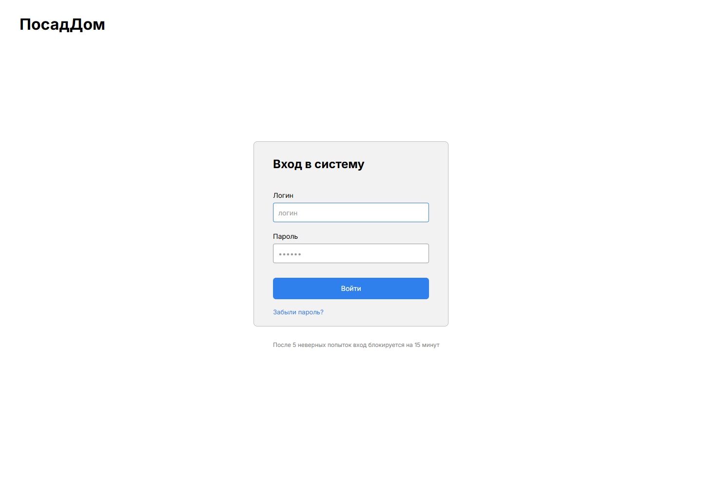
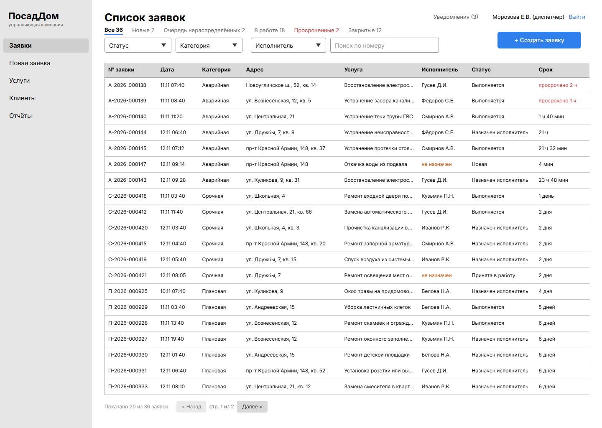
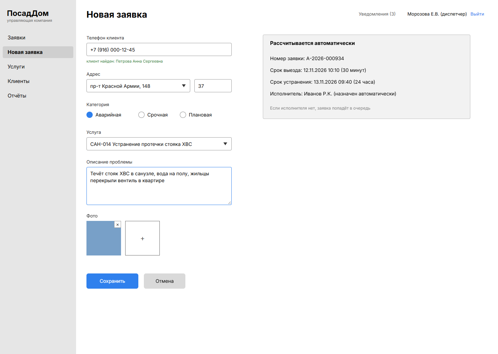
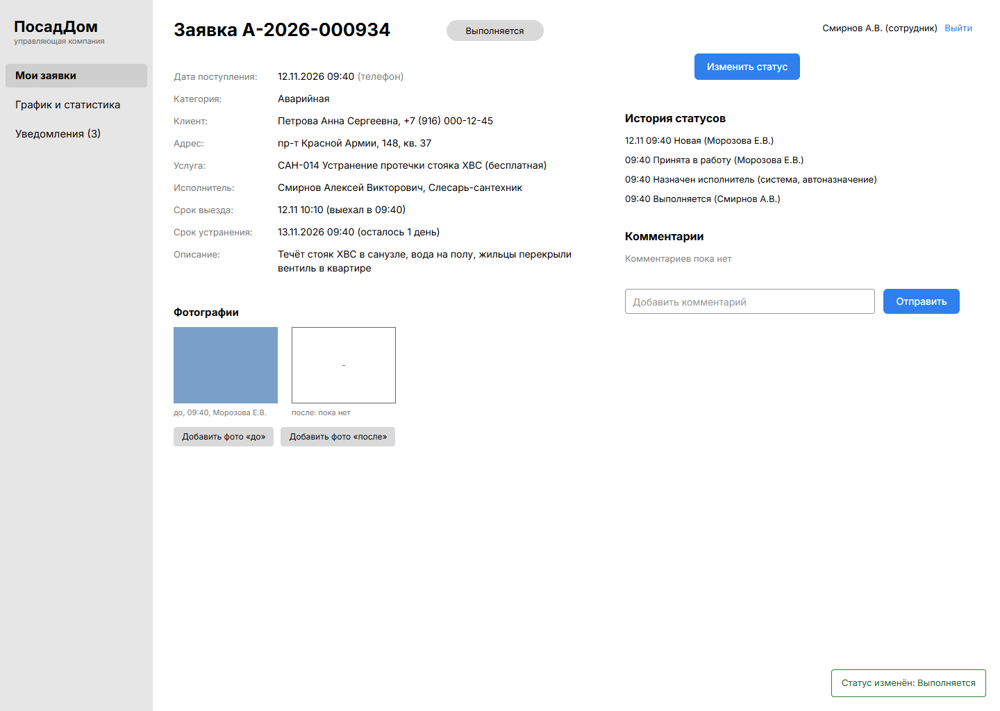
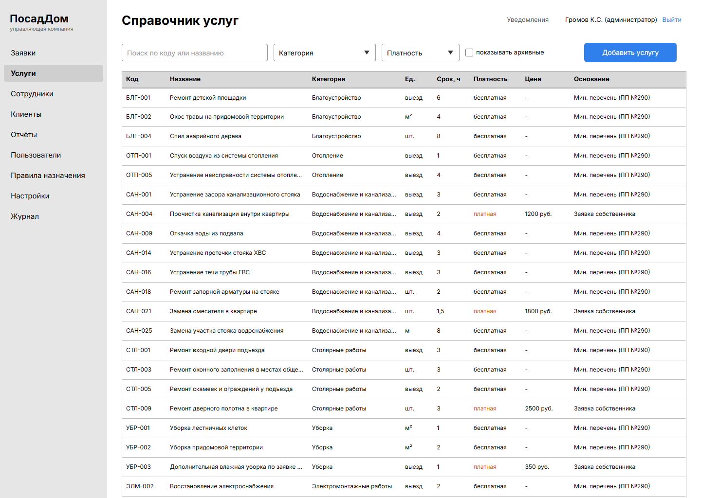
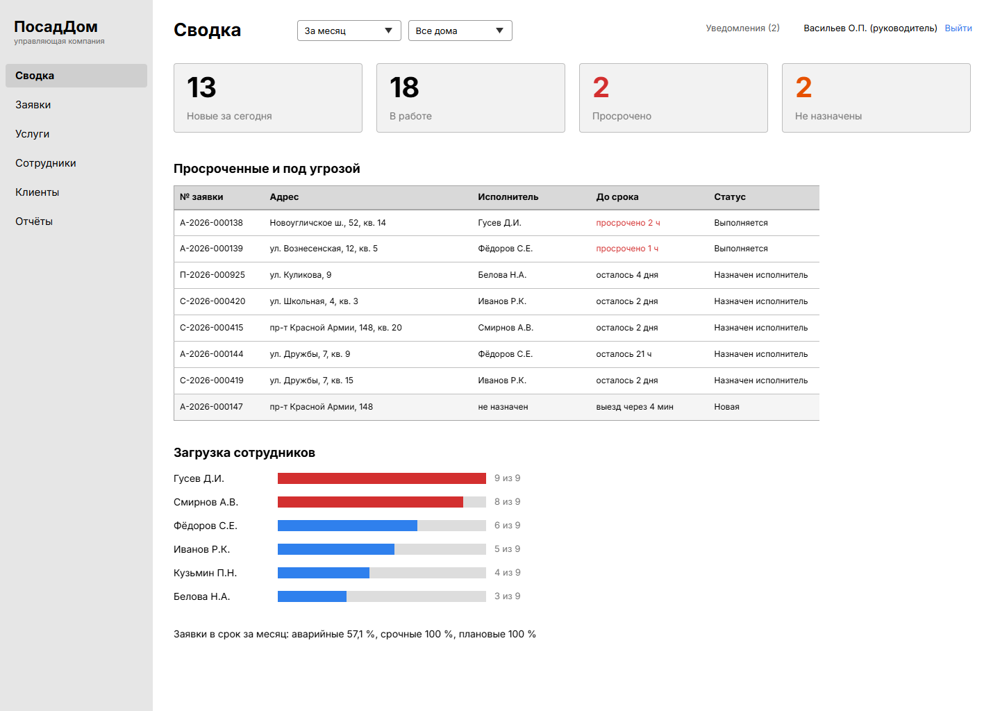

ПосадДом
Информационная система для приёма и контроля заявок на техническое обслуживание многоквартирных домов (курсовой проект, ООО УК «Посадское обслуживание домов»).
Это статичная страница с описанием. Само приложение написано на PHP и MariaDB, поэтому на GitHub Pages оно не запускается, его нужно запускать у себя. Исходный код лежит в репозитории.
Что умеет
- регистрация заявок с номером вида
А-2026-000145и расчётом сроков по срочности (аварийная, срочная, плановая); - автоназначение исполнителя по специализации, дому, смене и загрузке, очередь для ручного назначения;
- контроль сроков: предупреждение на 75 % времени и отметка о просрочке;
- история статусов, которую нельзя менять, блокировка закрытой заявки;
- фото к заявкам, проверка дублей клиентов;
- каталог услуг и начисления по платным услугам;
- панель руководителя, отчёты с выгрузкой в XLSX;
- роли: диспетчер, исполнитель, руководитель, администратор;
- уведомления (SMS и почта пишутся в файлы), очередь обмена с ГИС ЖКХ и РСО в виде заглушек.
Экраны






Стек
HTML, CSS и JavaScript без сборки (одностраничное приложение), PHP 8.2 без фреймворка, MariaDB 10.4+ (35 таблиц, представления, триггеры).
Запуск
Нужны PHP 8.2 и MariaDB (на Windows подойдёт XAMPP).
git clone https://github.com/Kirill21333/posaddom.git cd posaddom php database/install.php --demo php -S 127.0.0.1:8300 -t public public/index.php
После этого открыть http://127.0.0.1:8300. На Windows можно просто запустить start.bat.
Демо-аккаунты
Пароль у всех Demo12345.
| Логин | Роль |
|---|---|
| morozova.ev | диспетчер |
| vasilyev.op | руководитель |
| gromov.ks | администратор |
| smirnov.av | исполнитель |
Тесты
Папка tests: unit-тесты на PHP, API-тесты и e2e-тесты в браузере. Запуск tests\run_all.bat (база пересоздаётся).